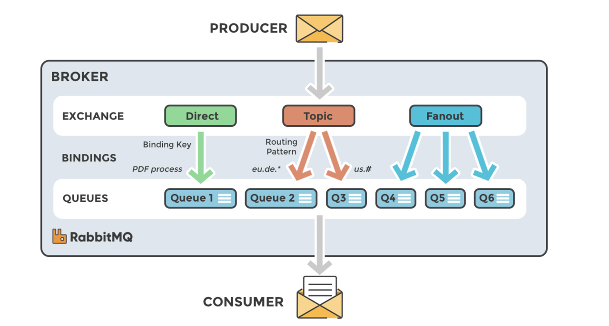
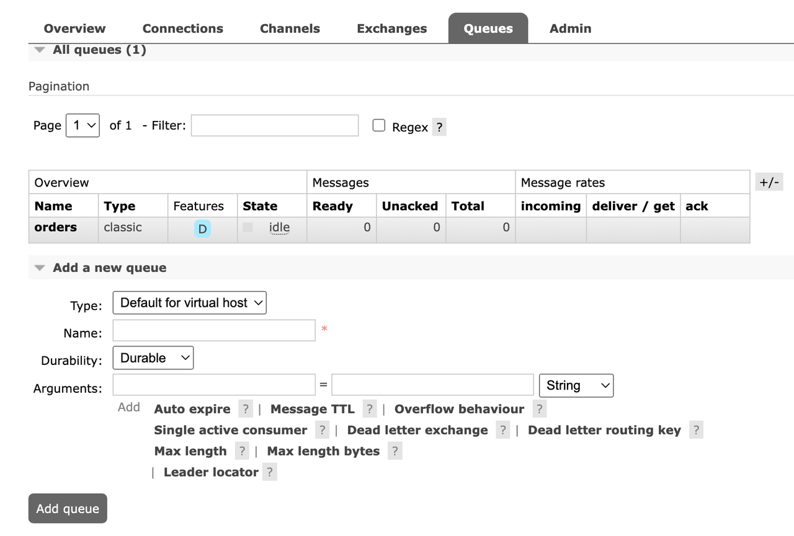
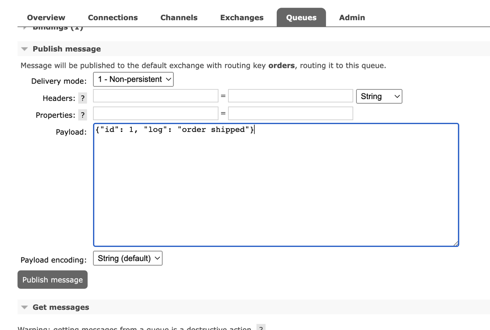
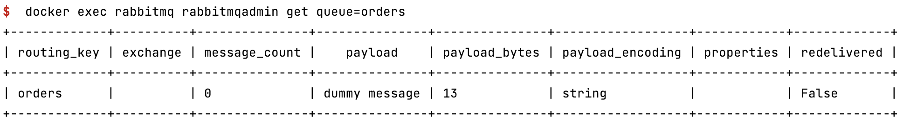

Hands-on RabbitMQ Tutorial
A short hands-on guide to get started with RabbitMQ for people who are in a hurry.
What is RabbitMQ?

Image Credit: CloudAMQP
RabbitMQ1 is an open-source message broker software that implements the Advanced Message Queuing Protocol (AMQP). With RabbitMQ, producer and consumer applications can communicate asynchronously, and they will be completely decoupled.
RabbitMQ Terminology
Producer: A producer is a client that publishes messages to the RabbitMQ broker. Producers write data to exchanges.
Consumer: A consumer is a client that subscribes to queues and processes the messages. Consumers read data from queues.
Queue: A queue is a buffer that stores messages. A queue is bound to an exchange and receives messages from it.
Exchange: An exchange is a message routing agent that receives messages from producers and routes them to queues.
Binding: A binding is a link between an exchange and a queue. It is created with a routing key. The producer sends messages to the exchange with a routing key. The exchange routes the message to the queues that are bound with a matching routing key.
RabbitMQ Setup
We can use the official RabbitMQ docker image to run RabbitMQ locally. We can run the following command to start a RabbitMQ container:
$ docker run --rm --name=rabbitmq -p 15672:15672 -p 5672:5672 rabbitmq:3-management
This image has rabbitmq management plugin enabled. We can access the management UI at http://localhost:15672. The default username and password are both guest.
It also has rabbitmqadmin command line tool installed, which can manage RabbitMQ.
Passing Messages from UI
We can use the management UI to send and receive messages. We can create a new queue and exchange from the Queues section.

Once a queue is created, we can publish and consume messages from that queue.

Passing Messages from CLI
Instead of using web UI, we can use rabbitmqadmin CLI tool2 to send and receive messages. Let's create a topic exchange and a queue.
$ docker exec rabbitmq rabbitmqadmin declare exchange type=direct name=orders # => exchange declared
$ docker exec rabbitmq rabbitmqadmin declare queue name=orders # => queue declared
Let's publish a message to the exchange:
$ docker exec rabbitmq rabbitmqadmin publish routing_key=orders payload='dummy message' # => Message published
To receive messages from the queue, we can use the following command:
$ docker exec rabbitmq rabbitmqadmin get queue=orders

Passing Messages from REST API
We can also use REST API to send and receive messages. Let's create a new exchange and queue:
$ curl -u guest:guest -X PUT -H "content-type:application/json" -d '{"type":"direct"}' http://localhost:15672/api/exchanges/%2f/orders
$ curl -u guest:guest -X PUT -H "content-type:application/json" -d '{"type":"topic", "durable": true}' http://localhost:15672/api/queues/%2f/orders
We can publish a message to the exchange:
$ curl -u guest:guest -X POST -H "content-type:application/json" -d '{"routing_key":"orders","payload":"dummy message","payload_encoding":"string", "properties": {} }' http://localhost:15672/api/exchanges/%2f/orders/publish
To receive messages from the queue, we can use the following command:
$ curl -u guest:guest -X GET http://localhost:15672/api/queues/%2f/orders/get
Conclusion
In this post, we have seen how to get started with RabbitMQ. We have seen how to use the management UI, CLI and REST API to send and receive messages.

Chillar Anand
A blog about python, careers & life.
To contact me, send a message here.